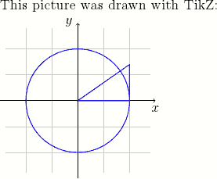
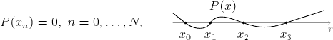
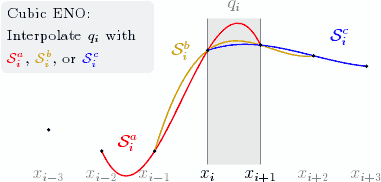
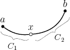

TikZ for High-Quality LaTeX Pictures
TikZ is a package for LaTeX for drawing pictures. It is a frontend to the Portable Graphics Format (PGF) package and is inspired from metafont, pstricks, and the standard LaTeX picture environment. In TikZ, the user programs the picture with commands that draw element by element.
The advantage of TikZ over imported graphics is that it uses fonts and line widths consistent with the rest of the LaTeX document. In contrast, imported graphics usually embed their fonts and rescaling the graphic also rescales line widths. Also, TikZ pictures are easier to adjust since the commands are part of the document.
Installation
To install TikZ/PGF:
- Debian or Ubuntu: install the pgf package
- MiKTeX: use the update wizard to install the pgf and xcolor packages.
Otherwise, download the latest version from http://sourceforge.net/projects/pgf, and follow the installation instructions in pgfmanual.pdf.
An Example
Here is an example LaTeX document with a TikZ picture.
\documentclass[12pt]{article}
\usepackage{tikz}
\begin{document}
This picture was drawn with TikZ:
\begin{tikzpicture}[scale=1.5]
% Draw thin grid lines with color 40% gray + 60% white
\draw [step=0.5,thin,gray!40] (-1.4,-1.4) grid (1.4,1.4);
% Draw x and y axis lines
\draw [->] (-1.5,0) -- (1.5,0) node [below] {$x$};
\draw [->] (0,-1.5) -- (0,1.5) node [left] {$y$};
% Draw a blue circle at the origin of radius 1
\draw [semithick,blue] (0,0) circle (1);
% Draw a triangle with vertices (0,0), (1,0), (1,0.7)
\draw [semithick,blue] (0,0) -- (1,0) -- (1,0.7) -- cycle;
\end{tikzpicture}
\end{document}
TikZ Basics
A picture is contained in a tikzpicture environment. The various parts of the picture are specified with \draw commands. A \draw command consists of options (color, line width, …) and a path, terminated by a semicolon:
\draw [options] path ;
All TikZ commands should end with a semicolon (;), beware that forgetting one can produce confusing error messages.
Paths
A path specifies a line, curve, or collection of lines and curves to be drawn. Here are some examples of different paths:
% A line.
\draw (-5,0) -- (5,2);
% A sequence of connected lines.
\draw (-1,0) -- (1,0) -- (0,1) -- (0,-1);
% A rectangle (specified by two corners).
\draw (-2,-1) rectangle (2,1);
% A circle.
\draw [`*options*`] (4,0) circle (0.5);The units for these are coordinates are cm, though they might not correspond to physical centimeters if the figure is scaled. You can also specify multiple primitives as a single path (not necessarily connected), for example the following draws two circles and a rectangle
Such a path is useful when we want to apply the same drawing options to multiple primitives.
Drawing Text
LaTeX code can be added to a picture using a node. Nodes can hold text, math, includegraphics, and most other kinds of LaTeX code. For example, the following specifies a node at coordinates (2,3):
\draw (2,3) node [node options] {LaTeX code};
Nodes also can be specified on the vertices of a path.
Specifying nodes this way is useful to annotate parts of a diagram and to label axes (as with the x and y axes in the first example).
Options
Options specify how to draw a path or node. TikZ is very flexible in this aspect and supports a great variety of effects. The typically useful drawing options are
Add an arrowhead:
[->]
Similarly,[<-](reverse) or[<->](double-headed).Set line width:
[semithick]
Other widths:very thin,thin,thick,very thick.Drawing in color:
[blue]Specifying a mixed color:
[blue!30!red]
(30% blue + 70% red)Draw translucent objects:
[opacity=0.4]
Another useful kind of option are geometric transformations:
Translation:
[xshift=1cm,yshift=-0.5cm]Scaling:
[scale=1.2]Coordinate scaling, reflection:
[xscale=2.5,yscale=-1]Rotation:
[rotate=35]
More Examples
The following examples demonstrate TikZ for some real world figures. Full explanation of these examples is beyond the scope of this tutorial, but studying the example codes may produce helpful keywords for finding further information.
A wavy curve
This example demonstrates the in and out options and accomplishing repeated elements with a \foreach loop.
\begin{tikzpicture}[scale=0.8]
% Draw equation as part of the TikZ picture
\draw (-4,0) node {$P(x_n) = 0, \; n = 0,\ldots, N,$};
\draw (2,0.65) node {$P(x)$};
\draw [->,gray] (0,0) -- (6.25,0) node [below] {\small $x$};
% Draw a wavy curve through the (x_n)
\draw [semithick]
(0,0.4) to [out=-40,in=140] (0.5,0)
to [out=-40,in=240] (1.5,0)
to [out=60,in=160] (2.8,0)
to [out=-20,in=200] (4.5,0)
to [out=20,in=200] (6,0.5);
% Label the (x_n) with a loop
\foreach \n/\x in {0/0.5, 1/1.5, 2/2.8, 3/4.5}
{
\fill (\x,0) circle (1.6pt) node [below=5pt] {$x_{\n}$};
}
\end{tikzpicture}
Figure illustrating cubic ENO
This picture shows how to write a multiline node with the text width option and more examples of \foreach. Also, some math is used in computing the control points such that the curves interpolate the data. It uses a custom color gold; add \definecolor{gold}{rgb}{0.85,0.65,0} to the preamble to reproduce.
% Define the y values of the data
\newcommand{\ya}{0.5}
\newcommand{\yb}{0.1}
\newcommand{\yc}{0.1}
\newcommand{\yd}{2}
\newcommand{\ye}{2.1}
\newcommand{\yf}{1.9}
\newcommand{\yg}{1.7}
\begin{tikzpicture}[scale=1.2]
% Draw a gray box with 'Cubic ENO: Interpolate q_i with ...'
\draw (-1,2.25)
node [fill={gray!10},rounded corners,left,text width=32mm]
{\footnotesize Cubic ENO: \\
Interpolate $q_i$ with \textcolor{red}{$\mathcal{S}^a_i$},
\textcolor{gold}{$\mathcal{S}^b_i$},
or \textcolor{blue}{$\mathcal{S}^c_i$}};
% Fill/draw the interval q_i
\fill [gray!15] (0,-0.15) rectangle (1,2.6);
\draw [gray,thin] (0,-0.15) -- (0,2.6) (1,-0.15) -- (1,2.6);
\draw [gray] (0.5,2.6) node [above] {$q_i$};
% Draw x labels
\draw [yshift=-0.15cm,below]
\foreach \i in {-3,-2,-1,+2,+3}
{
(\i,0) node [gray] {$x_{i\i}$}
}
(0,0) node [black] {$x_i$}
(1,0) node [black] {$x_{i+1}$};
% Draw Bezier curves, illustrating the three possible interpolations.
% The control points are computed such that the curves interpolate.
\draw [red,thick] (-2,\yb) .. controls
(-1,-5*\yb/6+3*\yc-9*\yd/6+2*\ye/6) and
(0,2*\yb/6-9*\yc/6+3*\yd-5*\ye/6) .. (1,\ye)
(-1.5,0.25) node {$\mathcal{S}^a_i$};
\draw [gold,thick] (-1,\yc) .. controls
(0,-5*\yc/6+3*\yd-9*\ye/6+2*\yf/6) and
(1,2*\yc/6-9*\yd/6+3*\ye-5*\yf/6) .. (2,\yf)
(-0.5,2) node {$\mathcal{S}^b_i$};
\draw [blue,thick] (0,\yd) .. controls
(1,-5*\yd/6+3*\ye-9*\yf/6+2*\yg/6) and
(2,2*\yd/6-9*\ye/6+3*\yf-5*\yg/6) .. (3,\yg)
(2.5,2.25) node {$\mathcal{S}^c_i$};
% Draw datapoint markers
\foreach \p in {(-3,\ya), (-2,\yb), (-1,\yc),
(0,\yd), (1,\ye), (2,\yf), (3,\yg)}
{
\fill \p circle (1pt);
}
\end{tikzpicture}
Braces
This picture shows how to draw curly braces with the path decoration library. To include this library, add
to the preamble just after \usepackage{tikz}. The picture also demonstrates naming nodes with the \node command.
\begin{tikzpicture}[scale=0.6]
% Draw three filled circles for points a,x,b, and define
% them as TikZ nodes
\node (a) at (0,1) [fill,circle,inner sep=1.2pt] {};
\node (x) at (1.8,0.5) [draw,circle,inner sep=1.2pt] {};
\node (b) at (4,2) [fill,circle,inner sep=1.2pt] {};
% Label the points
\draw (a) node [above] {$a$}
(x) node [above] {$x$}
(b) node [above] {$b$};
% Draw a curvy line through a,x,b
\draw [thick] (a) to [out=-35,in=185] (x)
(x) to [in=248,out=5] (b);
% Draw curly braces using path decoration
\draw [gray,decorate,decoration={brace,amplitude=5pt},
xshift=-4pt,yshift=-9pt]
(1.8,0.5) -- (0,1)
node [black,midway,below=4pt,xshift=-2pt]
{\footnotesize $C_1$};
\draw [gray,decorate,decoration={brace,amplitude=5pt},
xshift=8pt,yshift=-11pt]
(4,2) -- (1.8,0.5)
node [black,midway,below=2pt,xshift=8pt]
{\footnotesize $C_2$};
\end{tikzpicture}
Further Information
More TikZ/PGF examples are available at texample. Also see the manual pgfmanual.pdf for both tutorial and detailed reference information (find it in texmf/doc/generic/pgf/pgfmanual.pdf or search the web).